정보처리기사(구) (2011-08-21 기출문제)
1과목: 데이터 베이스
1. 시스템 카탈로그에 대한 설명으로 옳지 않은 것은?
- 시스템 카탈로그에 저장되는 내용을 메타 데이터라고도 한다.
- 시스템 자신이 필요로 하는 스키마 및 여러 가지 객체에 관한 정보를 포함하고 있는 시스템 데이터베이스이다.
- 기본 테이블, 뷰, 인덱스, 패키지, 접근 권한 등의 데이터베이스 구조 및 통계 정보를 저장한다.
- 시스템 카탈로그는 사용자가 직접 생성하고 유지한다.
(정답률: 87%)

2. DBMS의 필수기능 중 정의기능이 갖추어야 할 요건에 해당하는 것은?
- 데이터베이스를 접근하는 갱신, 삽입, 삭제 작업이 정확하게 수행되게 해야 한다.
- 데이터와 데이터의 관계를 명확하게 명세할 수 있어야 하며, 원하는 데이터 연산은 무엇이든 명세할 수 있어야 한다.
- 정당한 사용자가 허가된 데이터만 접근할 수 있도록 보안을 유지하여야 한다.
- 여러 사용자가 데이터베이스를 동시에 접근하여 처리할 때 데이터베이스와 처리 결과가 항상 정확성을 유지하도록 병행 제어를 할 수 있어야 한다.
(정답률: 69%)
3. 관계대수에 대한 설명으로 옳지 않은 것은?
- 원하는 릴레이션을 정의하는 방법을 제공하며 비절차적 언어이다.
- 릴레이션 조작을 위한 연산의 집합으로 피연산자와 결과가 모두 릴레이션이다.
- 일반 집합 연산과 순수 관계 연산으로 구분된다.
- 질의에 대한 해를 구하기 위해 수행해야 할 연산의 순서를 명시한다.
(정답률: 73%)
4. 정규화의 필요성으로 거리가 먼 것은?
- 데이터 구조의 안정성 최대화
- 중복 데이터의 활성화
- 수정, 삭제시 이상현상의 최소화
- 테이블 불일치 위험의 최소화
(정답률: 87%)
5. SQL의 명령은 사용 용도에 따라 DDL, DML, DCL로 구분할 수 있다. 다음 명령 중 그 성격이 나머지 셋과 다른 것은?
- CREATE
- ALTER
- SELECT
- DROP
(정답률: 80%)
6. 정규화 과정에서 발생하는 이상(Anomaly)에 관한 설명으로 옳지 않은 것은?
- 이상은 속성들 간에 존재하는 여러 종류의 종속관계를 하나의 릴레이션에 표현할 때 발생한다.
- 정규화는 이상을 제거하기 위해서 중복성 및 종속성을 배제시키는 방법으로 사용한다.
- 1NF의 이상을 해결하기 위해서는 프로젝션에 의해 릴레이션을 분해하여 부분 함수 종속을 제거해야 한다.
- 속성들 간의 종속 관계를 분석하여 여러 개의 릴레이션을 하나로 결합하여 이상을 해결한다.
(정답률: 59%)
7. 다음 트리를 후위 순회한 결과는?
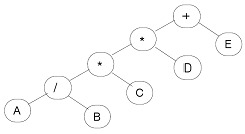
- + * A B / * C D E
- A B / C * D * E +
- A / B * C * D + E
- + * * / A B C D E
(정답률: 77%)
8. Which of the following is not a property of the transaction to ensure integrity of the data?
- isolation
- autonomy
- durability
- consistency
(정답률: 61%)
9. 데이터베이스의 물리적 설계 옵션 선택시 고려 사항으로 거리가 먼 것은?
- 스키마의 평가
- 응답시간
- 저장 공간의 효율화
- 트랜잭션 처리도(throughput)
(정답률: 74%)
10. 분산 데이터베이스에 대한 설명으로 거리가 먼 것은?
- 지역 자치성이 높다.
- 효용성과 융통성이 높다.
- 분산 제어가 가능하다.
- 소프트웨어 개발 비용이 저렴하다.
(정답률: 85%)
11. 릴레이션의 특징으로 옳지 않은 것은?
- 모든 튜플은 서로 다른 값을 갖는다.
- 속성은 더 이상 쪼갤 수 없는 원자 값을 저장해서는 안된다.
- 각 속성은 릴레이션 내에서 유일한 이름을 가진다.
- 한 릴레이션에 포함된 튜플 사이에는 순서가 없다.
(정답률: 85%)
12. 물리적 데이터베이스 설계 수행시 결정사항으로 거리가 먼 것은?
- 어떤 인덱스를 만들 것인지에 대한 고려
- 성능 향상을 위한 개념 스키마의 변경 여부 검토
- 빈번한 질의와 트랜잭션들의 수행속도를 높이기위한 고려
- 개념스키마와 외부스키마 설계
(정답률: 60%)
13. 데이터베이스 보안에 대한 설명으로 옳지 않은 것은?
- 보안을 위한 데이터 단위는 테이블 전체로부터 특정 테이블의 특정한 행과 열 위치에 있는 특정한 데이터 값에 이르기 까지 다양하다.
- 각 사용자들은 일반적으로 서로 다른 객체에 대하여 다른 접근권리 또는 권한을 갖게 된다.
- 불법적인 데이터의 접근으로부터 데이터베이스를 보호하는 것이다.
- 보안을 위한 사용자들의 권한부여는 관리자의 정책결정 보다는 DBMS가 자체 결정하여 제공한다.
(정답률: 78%)
14. 다음 초기 자료에 대하여 selection sort를 이용하여 오름차순 정렬할 경우 2회전 후의 결과는?
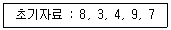
- 3, 8, 4, 9, 7
- 3, 4, 8, 9, 7
- 3, 4, 7, 9, 8
- 3, 4, 7, 8, 9
(정답률: 82%)
15. 다음 그림에서 트리의 차수(degree)는?
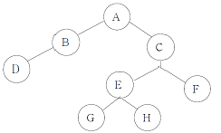
- 1
- 2
- 3
- 4
(정답률: 77%)
16. 병행제어 기법 중 로킹에 대한 설명으로 옳지 않은 것은?
- 로킹의 대상이 되는 객체의 크기를 로킹 단위라고 한다.
- 파일은 로킹 단위가 될 수 있지만 레코드는 로킹 단위가 될 수 없다.
- 로킹의 단위가 작아지면 로킹 오버헤드가 증가한다.
- 로킹의 단위가 커지면 데이터베이스 공유도가 저하한다.
(정답률: 75%)
17. 데이터베이스의 특성 중 다음 설명에 해당하는 것은?
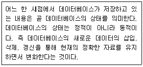
- Time Accessibility
- Concurrent Sharing
- Content Reference
- Continuous Evolution
(정답률: 75%)
18. 뷰(view)에 대한 설명으로 옳지 않은 것은?
- 뷰는 CREATE VIEW 명령을 사용하여 정의한다.
- 뷰의 정의는 ALTER VIEW 문을 사용하여 변경할 수 있다.
- 하나의 뷰를 삭제하면 그 뷰를 기초로 정의된 다른 뷰도 자동으로 삭제된다.
- 뷰를 제거할 때는 DROP 문을 사용한다.
(정답률: 67%)
19. What is the degree of a relation?
- the number of occurrences n of its relation schema
- the number of tables n of its relation schema
- the number of attributes n of its relation schema
- the number of key n of its relation schema
(정답률: 76%)
20. 스택의 자료 삭제 알고리즘이다. ( ) 안 내용으로 가장 적합한 것은?(단, Top : 스택포인터, S : 스택의 이름)
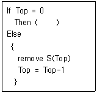
- Overflow
- Top = Top+1
- Underflow
- Top = Top-2
(정답률: 64%)
2과목: 전자 계산기 구조
21. Interrupt cycle에 대한 micro-operation 중에서 관계가 없는 것은?
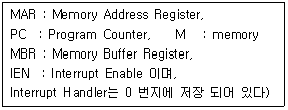
- MAR ← PC, PC ← PC + 1
- MBR ← MAR, PC ← 0
- M ← MBR, IEN ← 0
- GO TO fetch cycle
(정답률: 37%)
22. minterm으로 표시된 다음 boolean function을 간략화 한 것은?(단, d 함수는 don't care 임)
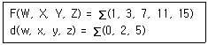
- WZ' + YZ'
- W'Z + YZ
- W'Z + Y'Z
- WX' + YZ
(정답률: 47%)
23. 3주소 명령어 연산에서 결과는 어디에 저장되는가?
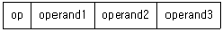
- PC(program counter)
- stack
- operand1
- 임시저장장소
(정답률: 61%)
24. 입출력 방법 가운데 메모리 내에 있는 I/O를 위한 특별한 명령어를 I/O 프로세서에게 수행토록 하여 CPU 관여없이 I/O를 수행하는 방법은?
- 프로그램에 의한 I/O
- 인터럽트에 의한 I/O
- DMA에 의한 I/O
- 채널에 의한 I/O
(정답률: 34%)
25. 유효자리에는 4자리, 지수에는 2자리까지 저장할 수 있는 시스템에서 (1.110*1010) * (9.200*10-5)의 부동소수점 곱셈을 계산한 결과를 올바르게 표시한 것은?(단, IEEE 754 정규화 표현에 따르며 바이어스 등은 고려하지 않음)
- 10.212*105
- 1.0212*106
- 1.021*106
- 0.1021*107
(정답률: 41%)
26. 다음 전가산기의 진리표 중 출력 캐리(C2)의 값은?
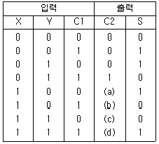
- (a):1 (b):0 (c):1 (d):0
- (a):1 (b):0 (c):0 (d):1
- (a):0 (b):1 (c):1 (d):1
- (a):0 (b):0 (c):0 (d):1
(정답률: 64%)
27. 다음은 팩(pack)형식의 10진수를 16진수로 나타낸 것이다. A와B의 덧셈 연산의 결과는?
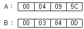
- 00 07 93 5C
- 00 07 93 5D
- 00 00 FF FC
- 00 00 25 5C
(정답률: 32%)
28. 인터럽트의 우선 순위 결정과 관련이 적은 것은?
- 트랩 방식
- 폴링 방식
- 벡터 방식
- 데이지 체인 방식
(정답률: 45%)
29. cycle steal 과 interrupt에 관한 설명 중 옳은 것은?
- interrupt 가 발생하면 interrupt가 처리될 때까지 CPU는 쉰다.
- interrupt 발생 시에는 CPU의 상태보전이 필요 없다.
- instruction 수행 도중에 cycle steal이 발생하면 CPU는 그 cycle steal 동안 정지된 상태가 된다.
- cycle steal의 발생 시에는 CPU의 상태보존이 필요하다.
(정답률: 49%)
30. 8비트 메모리 워드에서 비트패턴 (1110 1101)2는 “① 부호 있는 절대치(signed magnitude), ② 부호와 1의 보수, ③ 부호와 2의 보수” 로 해석될 수 있다. 각각에 대응되는 10진수를 순서대로 나타낸 것은?
- ① -109, ② -19, ③ -18
- ① -109, ② -18, ③ -19
- ① 237, ② -19, ③ -18
- ① 237, ② -18, ③ -19
(정답률: 52%)
31. 피연산자의 위치(기억 장소)에 따라 명령어 형식을 분류할 때 instruction cycle time이 가장 짧은 명령어 형식은?
- 레지스터-메모리 인스트럭션
- AC 인스트럭션
- 스택 인스트럭션
- 메모리-메모리 인스트럭션
(정답률: 53%)
32. 컴퓨터 연산에서 단항(unary) 연산에 해당되지 않는 것은?
- Shift
- Complement
- Rotate
- OR
(정답률: 59%)
33. 부동 소수점인 두 수의 나눗셈을 위한 순서를 올바르게 나열한 것은?
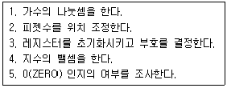
- 3-2-4-1-5
- 5-3-2-1-4
- 3-2-1-4-5
- 5-3-2-4-1
(정답률: 54%)
34. 채널 명령어의 구성 요소가 아닌 것은?
- data address
- flag
- operation code
- I/O device 처리 속도
(정답률: 66%)
35. 하나 이상의 프로그램 또는 연속되어 있지 않은 저장 공간으로부터 데이터를 모은 다음, 데이터들을 메시지 버퍼에 넣고, 특정 수신기나 프로그래밍 인터페이스에 맞도록 그 데이터를 조직화 하거나 미리 정해진 다른 형식으로 변환하는 과정을 일컫는 것은?
- porting
- converting
- marshalling
- streaming
(정답률: 38%)
36. 다음 중 부프로그램과 매크로(Macro)의 공통점은?
- 삽입하여 사용한다.
- 분기로 반복을 한다.
- 다른 언어에서도 사용한다.
- 여러 번 중복되는 부분을 별도로 작성하여 사용한다.
(정답률: 64%)
37. 일반적인 컴퓨터와 달리 명령어를 실행할 때 실행할 명령어의 순서와 상관없이 단지 피연산자의 준비여부에 따라 실행되며, 데이터의 종속 여부에 따라 수행 순서가 결정되는 방식으로 이론상으로 최대의 병렬성을 얻을 수 있는 컴퓨터 구조는?
- 배열 처리기(array processor)
- 시스톨릭 처리기(systolic processor)
- 파이프라인 처리기(pipeline processor)
- 데이터 흐름형 컴퓨터(data flow computer)
(정답률: 30%)
38. 메이저 스테이트 중 하드웨어로 실현되는 서브루틴의 호출이라고 볼 수 있는 것은?
- FETCH 스테이트
- INDIRECT 스테이트
- EXECUTE 스테이트
- INTERRUPT 스테이트
(정답률: 47%)
39. 동기고정식 마이크로 오퍼레이션 제어의 특성이 아닌 것은?
- 제어장치의 구현이 간단하다.
- 여러 종류의 마이크로 오퍼레이션 수행시 CPU사이클 타임 이 실제적인 오퍼레이션 시간보다 길다.
- 마이크로 오퍼레이션들의 수행 시간의 차이가 큰 경우에 적합한 제어이다.
- 중앙처리장치의 시간이용이 비효율적이다.
(정답률: 51%)
40. 마이크로 오퍼레이션(micro-operation)의 설명으로 옳지 않은 것은?
- 레지스터에 저장된 데이터에 의해 이루어지는 동작이다.
- 한 개의 클록(clock)펄스 동안 실행되는 기본동작이다.
- 한 개의 instruction은 여러 개의 마이크로 오퍼레이션이 동작되어 실행된다.
- 현재 CPU가 무엇을 하고 있는가를 나타내는 상태동작이다.
(정답률: 49%)
3과목: 운영체제
41. 운영체제에 대한 설명으로 옳지 않은 것은?
- 여러 사용자들 사이에서 자원의 공유를 가능케 한다.
- 사용자 인터페이스를 제공한다.
- 자원의 효과적인 경영 및 스케줄링을 한다.
- 운영체제의 종류에는 UNIX, LINUX, JAVA 등이 있다.
(정답률: 79%)
42. 시스템을 설계할 때 최적의 페이지 크기에 관한 결정이 이루어져야 한다. 페이지 크기에 관한 설명으로 옳지 않은 것은?
- 페이지 크기가 크면 페이지 테이블 공간은 증가한다.
- 입 · 출력 전송시 큰 페이지가 더 효율적이다.
- 페이지 크기가 클수록 디스크 접근 시간 부담이 감소된다.
- 페이지 크기가 작으면 페이지 단편화가 감소된다.
(정답률: 40%)
43. 다음의 페이지 참조 열(Page reference string)에 대해 페이지 교체 기법으로 FIFO를 사용할 경우 페이지 폴트 회수는?(단, 할당된 페이지 프레임 수는 3 이고, 처음에는 모든 프레임이 비어 있음)
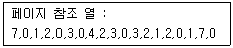
- 6
- 14
- 15
- 20
(정답률: 62%)
44. UNIX에서 쉘(Shell)에 대한 설명으로 옳지 않은 것은?
- 사용자 명령을 받아 해석하고 수행시키는 명령어 해석기이다.
- 프로세스 관리, 기억장치 관리, 파일 관리 등의 기능을 수행 한다.
- 시스템과 사용자 간의 인터페이스를 담당한다.
- 커널처럼 메모리에 상주하지 않기 때문에 필요할 경우 교체 될 수 있다.
(정답률: 60%)
45. 사이클이 허용되고, 불필요한 파일제거를 위해 참조 카운터가 필요한 디렉토리 구조는?
- 1단계 디렉토리 구조
- 2단계 디렉토리 구조
- 트리 디렉토리 구조
- 일반 그래프형 디렉토리 구조
(정답률: 50%)
46. 페이징 기법과 세그먼테이션 기법에 대한 설명으로 옳지 않은 것은?
- 페이징 기법에서는 주소 변환을 위한 페이지 맵 테이블이 필요하다.
- 프로그램을 일정한 크기로 나눈 단위를 페이지라고 한다.
- 세그먼테이션 기법에서는 하나의 작업을 크기가 각각 다른 여러 논리적인 단위로 나누어 사용한다.
- 세그먼테이션 기법에서는 내부 단편화가, 페이징 기법에서는 외부 단편화가 발생할 수 있다.
(정답률: 59%)
47. 절대로더에서 각 기능과 수행 주체의 연결이 옳지 않은 것 은?
- 연결 - 프로그래머
- 기억장소할당 - 로더
- 적재 - 로더
- 재배치 - 어셈블러
(정답률: 42%)
48. 다중 처리기 운영체제 구조 중 주/종(Master/Slave)처리기 시스템에 대한 설명으로 옳지 않은 것은?
- 종프로세서는 입 · 출력 발생시 주프로세서에게 서비스를 요청한다.
- 주프로세서는 입 · 출력 연산 작업을 수행한다.
- 한 처리기를 종프로세서로 지정하고 다른 처리기들은 주프로세서로 지정하는 구조이다.
- 주프로세서만이 운영체제를 실행할 수 있다.
(정답률: 65%)
49. 운영체제의 발달과정 순서를 옳게 나열한 것은?
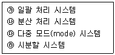
- 가→라→다→나
- 다→나→라→가
- 가→다→라→나
- 다→라→나→가
(정답률: 52%)
50. 파일 디스크립터(File Descriptor)에 대한 설명으로 옳지 않은 것은?
- 파일 관리를 위한 파일 제어 블록이다.
- 시스템에 따라 다른 구조를 가질 수 있다.
- 보조기억장치에 저장되어 있다가 파일이 개방될 때 주기억 장치로 옮겨진다.
- 사용자의 직접 참조가 가능하다.
(정답률: 66%)
51. 128개의 CPU로 구성된 하이퍼큐브에서 각 CPU는 몇 개의 연결점을 갖는가?
- 6
- 7
- 8
- 10
(정답률: 73%)
52. 프로세스의 정의로 거리가 먼 것은?
- 실행 중인 프로그램
- PCB를 가진 프로그램
- 프로시저가 활동 중인 것
- 동기적 행위를 일으키는 주체
(정답률: 75%)
53. 주기억장치 관리기법으로 최악 적합(Worst-fit) 방법을 이용할 경우 10K 크기의 프로그램은 다음과 같이 분할되어 있는 주기억장치 중 어느 부분에 할당되어야 하는가?
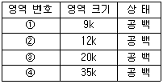
- 영역번호 ①
- 영역번호 ②
- 영역번호③
- 영역번호 ④
(정답률: 78%)
54. 다음과 같은 3개의 작업에 대하여 FCFS 알고리즘을 사용할 때, 임의의 작업 순서로 얻을 수 있는 최대 평균 반환시간을 T, 최소 평균 반환 시간을 t 라고 가정했을 경우 T - t 의 값은?
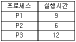
- 3
- 4
- 5
- 6
(정답률: 39%)
55. UNIX에서 파일에 대한 정보를 갖고 있는 inode의 내용으로 볼 수 없는 것은?
- 파일 링크수
- 파일 소유자의 식별 번호
- 파일의 최초 변경 시간
- 파일 크기
(정답률: 72%)
56. 다음 중 가장 바람직한 스케줄링 정책은?
- CPU 이용률을 줄이고 반환시간을 늘린다.
- 대기시간을 줄이고 반환시간을 늘린다.
- 응답시간과 반환시간을 줄인다.
- 반환시간과 처리율을 늘린다.
(정답률: 71%)
57. UNIX에서 파일의 사용 허가를 정하는 명령은?
- cp
- chmod
- cat
- ls
(정답률: 77%)
58. HRN(Highest Response-ratio Next) 스케줄링 방식에 대한 설명으로 옳지 않은 것은?
- 대기 시간이 긴 프로세스일 경우 우선 순위가 높아 진다.
- SJF 기법을 보완하기 위한 방식이다.
- 긴 작업과 짧은 작업 간의 지나친 불평등을 해소할 수 있다.
- 우선 순위를 계산하여 그 수치가 가장 낮은 것부터 높은 순으로 우선 순위가 부여된다.
(정답률: 66%)
59. 분산 처리 운영체제 시스템의 구축 목적으로 거리가 먼 것은?
- 보안성 향상
- 자원 공유의 용이성
- 연산 속도 향상
- 신뢰성 향상
(정답률: 75%)
60. 파일 보호 기법 중 다음 설명에 해당하는 것은?
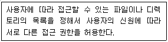
- Cryptography
- Password
- Naming
- Access control
(정답률: 69%)
4과목: 소프트웨어 공학
61. 설계품질을 평가하기 위해서는 반드시 좋은 설계에 대한 기준을 세워야 한다. 다음 중 좋은 기준이라고 할 수 없는 것은?
- 설계는 모듈적이어야 한다.
- 설계는 자료와 프로시저에 대한 분명하고 분리된 표현을 포함해야 한다.
- 소프트웨어 요소들 간의 효과적 제어를 위해 설계에서 계층적 조직이 제시되어야 한다.
- 설계는 서브루틴이나 프로시저가 전체적이고 통합적이 될 수 있도록 유도되어야 한다.
(정답률: 58%)
62. 사용자 인터페이스 설계시 오류 메시지나 경고에 관한 지침으로 옳지 않은 것은?
- 메시지는 이해하기 쉬워야 한다.
- 오류로부터 회복을 위한 구체적인 설명이 제공되어야 한다.
- 오류로 인해 발생될 수 있는 부정적인 내용은 가급적 피한다.
- 소리나 색 등을 이용하여 듣거나 보기 쉽게 의미전달을 하도록 한다.
(정답률: 76%)
63. 소프트웨어 품질 목표 중 소프트웨어를 다른 환경으로 이식할 경우에도 운용 가능하도록 쉽게 수정될 수 있는 시스템 능력을 의미하는 것은?
- Correctness
- Integrity
- Reliability
- Portability
(정답률: 68%)
64. 효과적인 프로젝트 관리를 위한 3P를 옳게 나열한 것은?
- People, Problem, Process
- Power, People, Priority
- Problem, Priority, People
- Priority, Problem, Possibility
(정답률: 81%)
65. 소프트웨어 공학에 대한 적절한 설명이 아닌 것은?
- 소프트웨어의 개발, 운영, 유지보수, 그리고 폐기에 대한 체계적인 접근이다.
- 소프트웨어 제품을 체계적으로 생산하고 유지보수와 관련된 기술과 경영에 관한 학문이다.
- 과학적인 지식을 컴퓨터 프로그램 설계와 제작에 실제 응용하는 것이며, 이를 개발하고 운영하고 유지보수하는데 필요한 문서화 작성 과정이다.
- 소프트웨어의 위기를 이미 해결한 학문으로, 소프트웨어의 개발만을 위한 체계적인 접근이다.
(정답률: 76%)
66. 유지보수의 종류 중 소프트웨어를 운용하는 환경 변화에 대응하여 소프트웨어를 변경하는 경우로써 운영체제나 컴파일러와 같은 프로그래밍 환경의 변화와 주변장치 또는 다른 시스템 요소가 향상되거나 변경될 때 대처할 수 있는 것은?
- Corrective Maintenance
- Perfective Maintenance
- Preventive Maintenance
- Adaptive Maintenance
(정답률: 66%)
67. 블랙 박스 테스트 기법 중 다음 설명에 해당하는 것은?
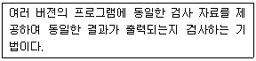
- Boundary Value Analysis
- Cause Effect Graphing Testing
- Equivalence Partitioning Testing
- Comparison Testing
(정답률: 44%)
68. 바람직한 설계 지침이 아닌 것은?
- 모듈의 기능을 예측할 수 있도록 정의한다.
- 이식성을 고려한다.
- 적당한 모듈의 크기를 유지한다.
- 가능한 모듈의 독립적으로 생성하고 결합도를 최대화 한다.
(정답률: 79%)
69. 객체지향 설계에 대한 설명으로 옳지 않은 것은?
- 객체지향 설계에 있어 가장 중요한 문제는 시스템을 구성하는 객체와 속성, 연산을 인식하는 것이다.
- 시스템 기술서의 동사는 객체를, 명사는 연산이나 객체 서비스를 나타낸다.
- 객체지향 설계를 문서화할 때 객체와 그들의 부객체(Sub-Object)의 계층적 구조를 보여주는 계층차트를 그리면 유용하다.
- 객체는 순차적으로(Sequently) 또는 동시적으로 (Concurrently) 구현될 수 있다.
(정답률: 56%)
70. 소프트웨어 재사용에 대한 설명으로 옳지 않은 것은?
- 시스템 명세, 설계, 코드 등 문서를 공유하게 된다.
- 소프트웨어 개발의 생산성을 향상시킨다.
- 프로젝트 실패의 위험을 증가시킨다.
- 새로운 개발 방법론의 도입이 어려울 수 있다.
(정답률: 75%)
71. 4명의 개발자가 5개월에 걸쳐 10000 라인의 코드를 개발하였을 때, 월별(person-month) 생산성 측정을 위한 계산 방식으로 가장 적합한 것은?
- 1/(4X5X10000)
- 10000/(4X5)
- 10000/5
- (4X10000)/5
(정답률: 74%)
72. 소프트웨어 재공학 활동 중 기본 소프트웨어의 명세서를 확인하여 소프트웨어의 동작을 이해하고 재공학 대상을 선정하는 것은?
- Analysis
- Reverse Engineering
- Restructuring
- Migration
(정답률: 55%)
73. 객체지향 시스템에서 자료부분과 연산(또는 함수)부분 등 정보처리에 필요한 기능을 한 테두리로 묶는 것을 무엇이라고 하는가?
- information hiding
- class
- encapsulation
- integration
(정답률: 50%)
74. 소프트웨어 역공학(Software reverse engineering)에 대한 설명으로 옳지 않은 것은?
- 역공학의 가장 간단하고 오래된 형태는 재문서화라고 할 수 있다.
- 기존 소프트웨어의 구성 요소와 그 관계를 파악하여 설계도를 추출한다.
- 원시 코드를 분석하여 소프트웨어의 관계를 파악한다.
- 대상 시스템 없이 새로운 시스템으로 개선하는 변경 작업이다.
(정답률: 76%)
75. 소프트웨어 위기 발생 요인과 거리가 먼 것은?
- 개발 일정의 지연
- 소프트웨어 관리의 부재
- 소프트웨어 품질의 미흡
- 소프트웨어 생산성 향상
(정답률: 79%)
76. 소프트웨어의 특징에 대한 설명으로 옳지 않은 것은?
- 소프트웨어 생산물의 구조가 코드 안에 숨어 있다.
- 논리적 절차에 따라 개발된다.
- 사용에 의해 마모되거나 소멸된다.
- 요구나 환경의 변화에 따라 적절히 변형시킬 수 있다.
(정답률: 80%)
77. 브룩스(Brooks)의 법칙에 해당하는 것은?
- 소프트웨어 개발 인력은 초기에 많이 투입하고 후기에 점차 감소시켜야 한다.
- 소프트웨어 개발 노력은 40 - 20 - 40 으로 해야한다.
- 소프트웨어 개발은 소수의 정예요원으로 시작한 후 점차 증원해야 한다.
- 소프트웨어 개발 일정이 지연된다고 해서 말기에 새로운 인원을 투입하면 일정은 더욱 지연된다.
(정답률: 75%)
78. 자료 사전에서 기호 “( )” 의 의미는?
- 정의
- 생략
- 선택
- 반복
(정답률: 71%)
79. 람바우의 모델링에서 상태도와 자료흐름도는 각각 어떤 모델링과 관련 있는가?
- 상태도 - 동적 모델링, 자료흐름도 - 기능 모델링
- 상태도 - 기능 모델링, 자료흐름도 - 동적 모델링
- 상태도 - 객체 모델링, 자료흐름도 - 기능 모델링
- 상태도 - 객체 모델링, 자료흐름도 - 동적 모델링
(정답률: 52%)
80. 다음 중 소프트웨어 개발 영역을 결정하는 요소에 해당하는 항목 모두를 옳게 나열한 것은?
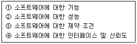
- ①, ②
- ①, ②, ③
- ①, ②, ④
- ①, ②, ③, ④
(정답률: 70%)
5과목: 데이터 통신
81. OSI-7계층 중 프로세스간의 대화 제어(dialogue control) 및 동기점(synchronization point)을 이용한 효율적인 데이터 복구를 제공하는 계층은?
- Data Link layer
- Network layer
- Transport laye
- Session layer
(정답률: 51%)
82. 다음이 설명하고 있는 데이터 링크 제어 프로토콜은?
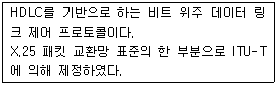
- PPP
- ADCCP
- LAP-B
- SDLC
(정답률: 57%)
83. 시분할 다중화(Time Division Multiplexing)의 설명으로 틀린 것은?
- 시분할 다중화에는 동기식 시분할 다중화와 통계적 시분할 다중화 방식이 있다.
- 동기식 시분할 다중화 방식은 전송 프레임마다 각 시간 슬롯이 해당 채널에게 고정적으로 할당된다.
- 통계적 시분할 다중화 방식은 전송할 데이터가 있는 채널만 차례로 시간슬롯을 이용하여 전송한다.
- 통계적 시분할 다중화 보다 동기식 시분할 다중화 방식이 전송 대역폭을 더욱더 효율적으로 사용할 수 있다.
(정답률: 63%)
84. 일반적으로 불균형적인 멀티 포인트(Multi-point) 링크 구성에서 회선제어를 할 때 주국(Primary Station)이 각 보조국(Secondary station)에게 데이터를 요청하는 방법은?
- 폴링(Polling)
- 셀렉션(Selection)
- 요청(Request)
- 응답(Response)
(정답률: 60%)
85. 토큰 패싱 방식에서 토큰에 대하여 가장 올바르게 설명한 것은?
- 데이터 통신 시 에러를 체크하기 위해 사용된다.
- 전송할 데이터를 의미한다.
- 채널 사용권을 의미한다.
- 5바이트로 구성되어 있다.
(정답률: 60%)
86. X.25는 ITU-T 표준으로 호스트 시스템과 패킷 교환망간 인터페이스를 규정하고 있다. 이 기능에 포함되지 않는 것은?
- 링크 계층
- 패킷 계층
- 물리 계층
- 전송 계층
(정답률: 50%)
87. 다음이 설명하고 있는 것은?
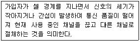
- 핸드오프
- 모바일 IP
- 셀 채인지
- 헤더 변환
(정답률: 66%)
88. 다음이 설명하고 있는 에러 검출 방식은?
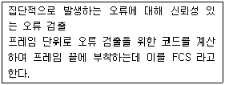
- Cyclic Redundancy Check
- Hamming Code
- Parity Check
- Block Sum Check
(정답률: 59%)
89. 아날로그 데이터를 디지털신호로 변환하는 변조방식은?
- ASK
- PSK
- PCM
- FSK
(정답률: 64%)
90. 외부 라우팅 프로토콜로서 AS(Autonomous System)간의 라우팅 테이블을 전달하는데 주로 이용되는 것은?
- BGP
- RIP
- OSPF
- LSA
(정답률: 39%)
91. 다음 중 부정적 응답에 해당하는 전송제어 문자는?
- NAK(Negative Acknowledge)
- ACK(ACKnowledge)
- EOT(End of Transmission)
- SOH(Start of Heading)
(정답률: 80%)
92. OSI 참조 모델에서 계층을 나누는 목적으로 가장 거리가 먼 것은?
- 시스템 간의 통신을 위한 표준 제공
- 네트워크 자원의 공유를 통한 경비 절감
- 시스템 간의 정보 교환을 하기 위한 상호 접속점의 정의
- 관련 규격의 적합성을 조성하기 위한 공통적인 기반조성
(정답률: 61%)
93. TCP 프로토콜의 플래그(제어) 비트에 대한 설명으로 틀린 것은?
- ACK 비트는 확인 응답번호가 기술되어 있음을 표시한다.
- PSH 비트는 데이터를 가능한 천천히 보내도 무방함을 표시 한다.
- SYN 비트는 연결을 초기화하기 위해 순서번호를 동기화할 때 사용한다.
- FIN 비트는 송신축이 데이터 전송을 종료할 때 사용한다.
(정답률: 57%)
94. HDLC는 링크 구성 방식에 따라 세 가지 동작 모드를 가진다. 이에 해당하지 않는 것은?
- NBM
- ABM
- ARM
- NRM
(정답률: 52%)
95. 다중접속방식에 해당하지 않는 것은?
- FDMA
- SDMA
- TDMA
- CDMA
(정답률: 55%)
96. 데이터링크 프로토콜인 HDLC에서 프레임의 동기를 제공하기 위해 사용되는 구성 요소는?
- 플래그(Flag)
- 제어부(Control)
- 정보부(Information)
- 프레임 검사 시퀀스(Frame Check Sequence)
(정답률: 57%)
97. 다음 중 자유경쟁으로 채널 사용권을 확보하는 방법으로 노드 간의 충돌을 허용하는 네트워크 접근 방법은?
- Slotted Ring
- Token Passing
- CSMA/CD
- Polling
(정답률: 54%)
98. 도착한 메시지를 일단 저장한 후 다음 노드로 가는 링크가 비어 있으면 전송해 나가는 교환 방식은?
- 회선교환
- 메시지교환
- 데이터 그램 패킷교환
- 가상회선 패킷교환
(정답률: 43%)
99. IEEE 802 표준에서는 데이터 링크 계층을 MAC, LLC 두 개의 부 계층으로 나누고 있다. 이 중에서 MAC 부 계층의 역할은?
- 논리적 주소의 결정
- 다른 통신망 형태에 프레임을 전송
- 상위계층과의 인터페이스
- 어느 노드에게 통신기회를 부여할 것인가를 결정
(정답률: 38%)
100. GO-Back-N ARQ에서 7번째 프레임까지 전송하였는데 수신측에서 4번째 프레임에 오류가 있다고 재전송을 요청해 왔다. 재전송 되는 프레임의 개수는?
- 1개
- 2개
- 3개
- 4개
(정답률: 66%)